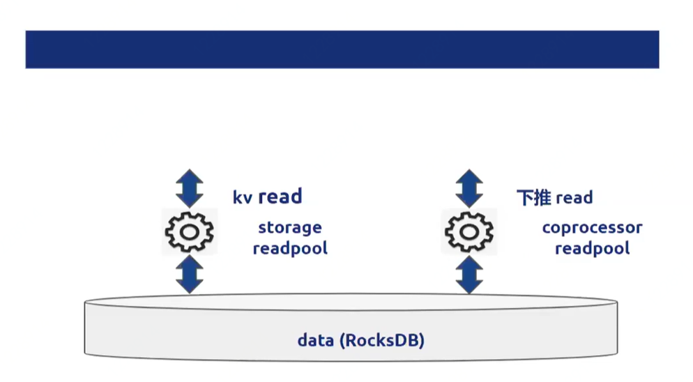
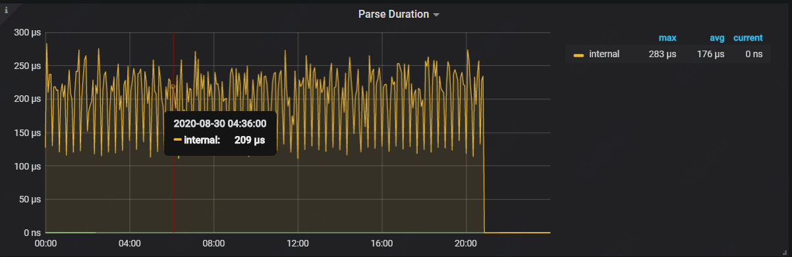
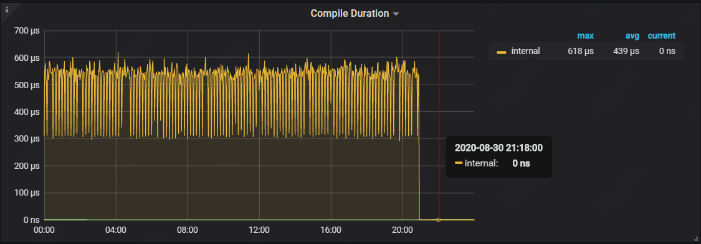
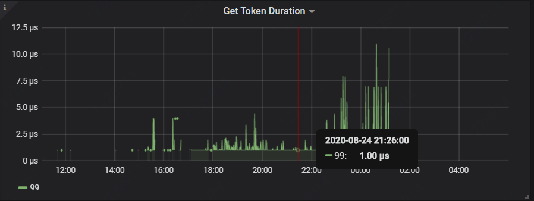
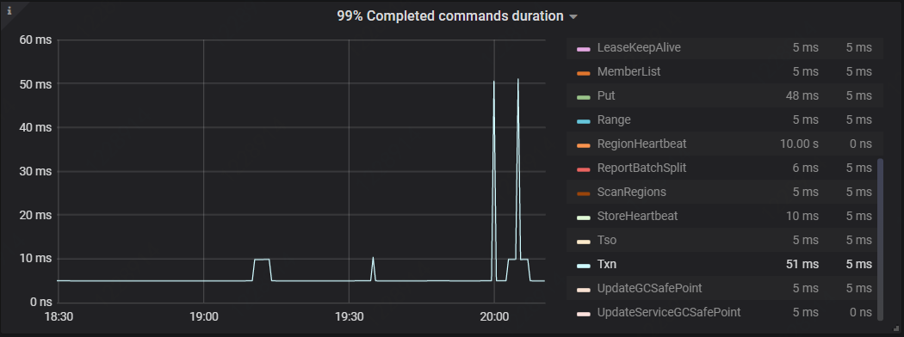
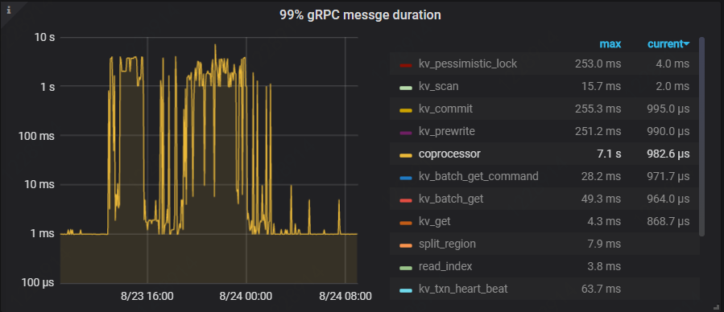
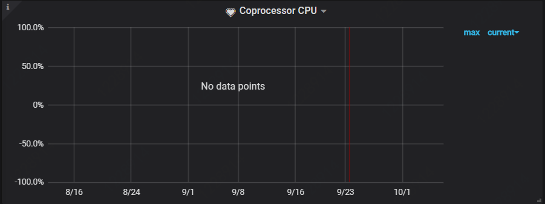

TiDB读请求的执行流程
SQL的一生

从客户端的Socket读取一条SQL
获取一个token
从PD获取TSO（事务的时间戳）
使用Parser将SQL parse为AST
将AST compile为执行计划
Logical Optimizer
Physical Optimizer
Execute Plan
根据对应的执行计划，最底层的Executor会根据这条SQL处理的Key范围构建出多个要下发到TiKV的请求，并通过distsql的API将这些请求分发到TiKV
TiKV对结果做一些处理（包括filter,limit等）后，将中间结果集反馈给TiDB
TiDB进行一些表关联、聚合运算最终返回给Client

TiKV收到请求后，会将请求分为两类：
- storage read pool执行引擎：负责主键和唯一索引点查
- coprocessor执行引擎：其余的请求
如何定位slow query
slow query产生的原因
按组件划分
TiDB
parse慢
complie慢，生成物理执行计划
get token慢，分配线程慢
执行计划不正确
PD
- 获取tso慢，每个SQL要获取时间戳的
TiKV
需要扫描大量的key，耗时久
coprocessor cpu打满，资源等待
读热点
slow query获取渠道
- 集群监控上的metrics信息
- slow-query log，对标MySQL格式，支持市场上的MySQL慢查询分析工具
- TiDB的慢查询SQL内存表
- TiKV节点日志slow-query反查
TiDB - Parse Metrics
位置：TiDB->Executor->Parse Duration
parse慢可能原因：TiDB节点CPU压力大
图例：

TiDB - Compile Metrics
位置：TiDB->Executor->Compile Duration
parse慢可能原因：
TiDB节点CPU压力大
in子查询结果集多，跟参数tidb_opt_insuqquery_unfold有关(2.1)
这个参数控制in子查询执行计划的处理，设置为1的情况，会默认把in的子查询结果集当做一个常量返回给上一层做where条件的过滤，compile是要生成物理执行计划的，在执行计划时in的查询已经执行了，只在2.1有开关，默认关闭，3.0后没有这个参数
图例：

TiDB - Get Token Duration Metrics
位置：TiDB->Server->Get Token Duration
parse慢可能原因：token个数不足，需要调整token-limit
说明连接过多，token默认上限是1000，超过1000后，客户端或者前台需要等待，如果这个等待比较长，并且连接数也超过上限了，就可以适当的调整这个参数，或者加TiDB节点
图例：

PD - tso
位置：PD->Grpc->99% completed_cmd_duration_seconds->txn
可能慢的原因：
- PD Leader切换
- PD Leader节点异常，包括cpu、磁盘等。
图例：

TIKV - Grpc Duration Metrics
位置：TiKV->Grpc->Coprocessor
可能慢的原因：
- 需要大量扫描的key，某个SQL扫了大量的key
- Coprocessor CPU打满，造成资源等待
图例：

TIKV - Coprocessor Cpu
位置：TiKV->Thead Cpu->Coprocessor Cpu
可能慢的原因：
- 大量扫描的key，将cpu资源占满
- 读热点，造成cpu资源等待
图例：

慢查询排查技能 - slow query log
#Time：2019-04-25-15:19:33.26029 +0800
#Txn_start_ts：407942403346923524
#User：root@127.0.0.1
#Conn_ID：1
#Query_time：2.632671582
#Process_time：0.079 Wait_time：0.009 Backoff_time：0.1 Request_count：8 Total_keys：20008 Process_keys：20000
#DB：test
#Index_ids：[1] –TiDb
#Is_internal：false
#Digest：edb16a8f28d9c48790925fd1c868fdae3feb49bc58481dda7df228625a5ba6e1
#Stats：t_wide:407941920305971202,t_slim:pseudo –TiDB
#Cop_proc_avg：0.009875 Cop_proc_p90：0.018 Cop_proc_max：0.018 Cop_proc_addr：127.0.0.1:22160
#Cop_wait_avg：0.001125 Cop_wait_p90：0.002 Cop_wait_max：0.002 Cop_wait_addr：127.0.0.1:24160
#Mem_max：195349 –TiDB
select count(1) from t_slim,t_wide where t.clim.c0>t.wide.c0 and t.slim.c1>t.wide.c1 and t_wide.c0 > 5000;
- Red color is related with TiDB
- Blue color is related with TiKV/Coprocessor